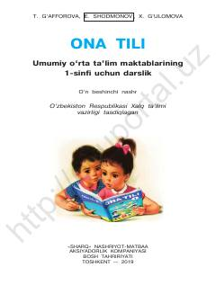

OT1-sinf o'quvchilari uchun ona tili fanidan asosiy darslik.
Ushbu darslik umumiy o'rta ta'lim maktablarining 1-sinf o'quvchilari uchun mo'ljallangan bo'lib, ona tili fanidan boshlang'ich bilimlarni beradi. Kitobda tovushlar, harflar va so'zlar ustida ishlashga oid mashqlar hamda qiziqarli topshiriqlar jamlangan.